id="js_content" style="">
正文共计6000字左右
预计阅读时间10min
转载请在后台回复“授权”
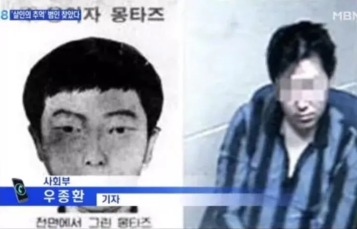
这两天，韩国第一悬案“华城连环杀人案”侦破。
33年了！连环杀人狂魔终于被找到。
宋康昊大叔的飞脚终于可以派上用场了。
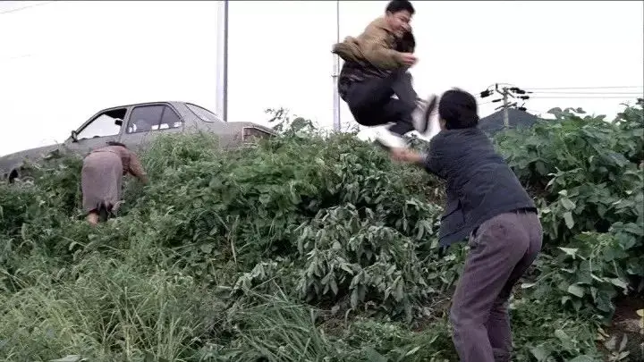
这个消息让无数中国影迷长长地舒了一口气。
因为根据这场悬案改编的《杀人回忆》曾给每个人留下了深深的阴影和无尽的噩梦！
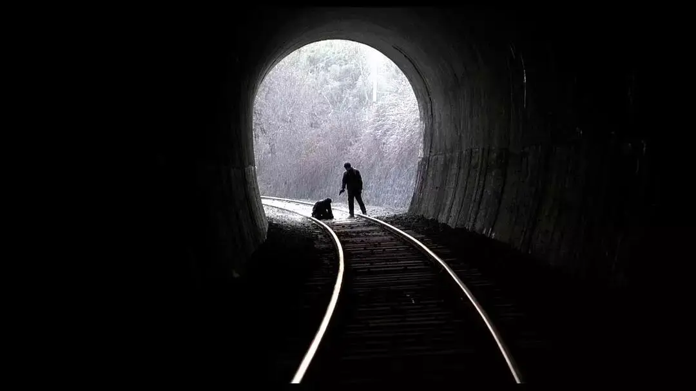
-01- 噩梦
1986年，韩国华城市一个小镇。
第一起：9月15日，一个71岁妇女的尸体在一片田地被发现，下半身赤裸，双脚以x字捆绑，死因是勒死。
受害者没有被强奸的迹象，但内裤被凶手带走。
第二起：10月份，25岁的女子相亲结束后，返程途中被害，死因同样是勒死，胸口有四处刀伤。
受害者全身赤裸，但没有被强奸的迹象，一只丝袜消失，疑似被凶手带走。
第三起：12月份，24岁家庭主妇和丈夫晚上一起聚餐，庆祝结婚一周年。聚餐后丈夫返回了公司，女子回家途中失踪。
丈夫报案后，警察竭力寻找女子的下落，131天后，女子的尸体在离自家只有50米的稻田田埂里发现。
依旧是全身赤裸，但没有被强奸，女子被凶手用长筒袜勒死。尸体被发现时，死者脸上被盖上内裤，胸部更是惨不忍睹，部分被凶手切下带走。
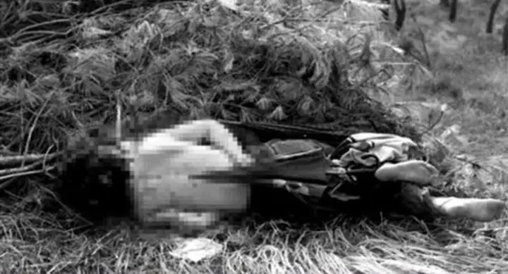
第四起：距离上一起仅仅两天，一个21岁女职员再次惨遭杀害，尸体被发现时，双手被胸罩绑着，头上盖着紧身短裤，死因还是勒死。
死者有被强奸的痕迹，现场留下精液物证。
接二连三的惨案也引起当地居民的极大恐慌和政府的重视，当时案件交给了有十五年刑事侦查经验的何升均警官负责（杀人回忆朴探长原型）。
可这并未阻止恶魔继续作恶。
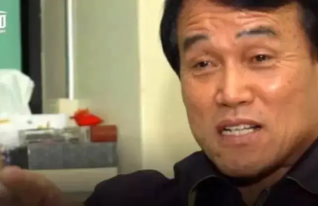
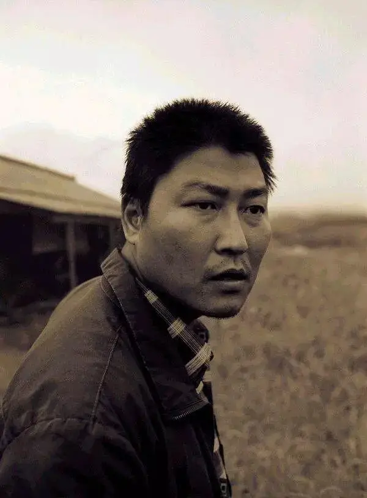
1987年
第五起：1月，一个18岁的女学生放学回家途中惨遭杀害，横尸田地，凶手作案手法和此前如出一辙，反绑、勒死，嘴巴还被袜子塞住，上本身被衣服盖着，下半身赤裸，有被强奸的痕迹，现场留有精液物证。
第六起：5月夜晚十一点，外面下起了雨，一个28岁的家庭主妇带着两把伞去接丈夫，途中被歹徒用胸罩勒死。
死者全身赤裸，没有被强奸的痕迹，但是死者胸部部分被凶手切割带走。
第七起：9月，54岁妇女在帮儿子打理完食堂后，在回家路上遇害。
尸体被发现时，双手被胸罩反绑，全身赤裸，死因是勒死，但没有被强奸。
死者身上有多处刀伤，生殖器被严重破坏，阴道被放入八块桃子的碎片。
这些恐怖变态的作案手法让当地妇女白天都不敢单独出门，所有人都期望着案件尽快侦破。
可虽然警方拼尽全力，案件依旧没有什么大的进展，一个又一个线索给了警察一次又一次的希望，但这些线索又一次又一次地断掉。
尤其是第八起：13岁女孩在晚上前往教会的途中被歹徒从后面持刀挟持，并被强行拖到一片田地中。
和之前的手法类似，女孩被反绑，嘴巴被内裤塞住，头上被套上紧身短裤，女孩最终被歹徒强奸。
幸运的是，女孩最后侥幸逃脱，成为10起案件中唯一的幸存者。
警察之后抓到了一个嫌疑犯，并且有证据可以证明他就是第八起案件的真凶。
当时警方非常激动，以为他就是那个连环杀人魔，可令他们绝望的是，并没有证据证明他与其他案件有关。
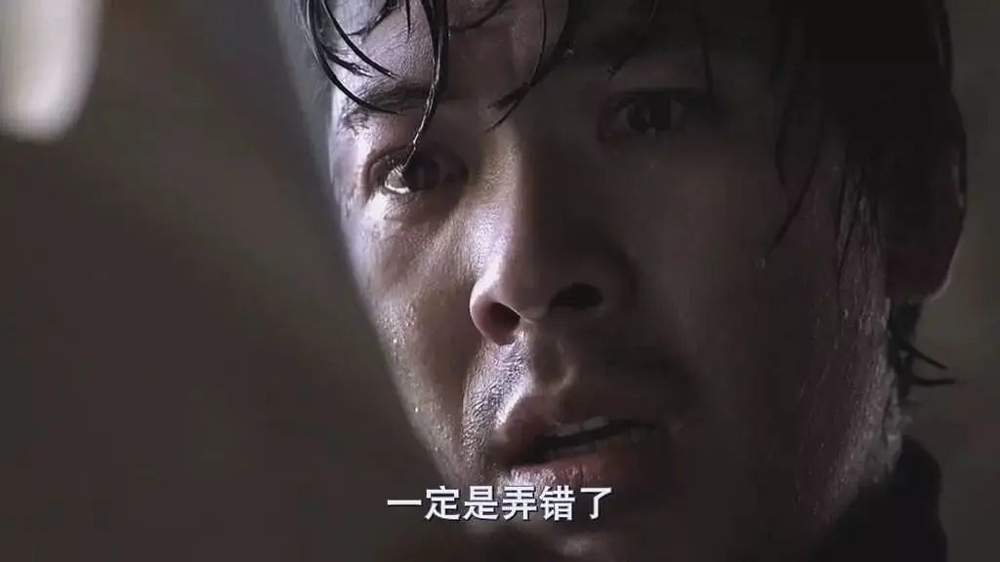
案件再次陷入困境，真相迟迟难以大白，这个残酷的事实折磨着警方和所有的受害者。
接下来的两年多，歹徒似乎对警察的行动有所忌惮，并没有再发生类似的事件。
可1990年噩梦再次袭来。
第九起：11月份，14岁的女学生回家路上遇害，歹徒变态至极，尸体被发现时，双手双脚被反绑，嘴巴被胸罩塞住，胸口有两道刀伤，有部分被凶手切走带离。
女孩的生殖器也被严重破坏，阴道被插入圆珠笔、叉子、汤匙，但女孩没有被强奸的痕迹。
面对如此惨状，女孩母亲昏厥数次，探长何升均曾坦言“说实话，我想杀了他”。
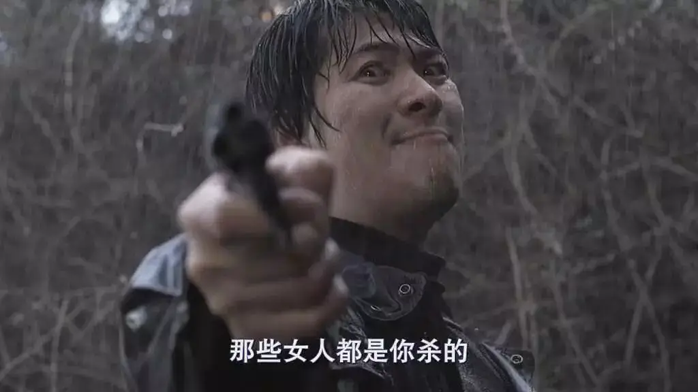
第十起：1991年4月，69岁妇女回家途中遇害，死因是被长筒袜勒死，没有被强奸的痕迹，死者生殖器被凶手用刀严重破坏，阴道内被放入两双长筒袜。
十起案件，歹徒有很大力气拖着受害者到施暴地，他也非常有耐力，为了等待受害者，可以在雨中静静等待一个小时。
同时，这个狂魔变态至极，对女性的身体既着迷又仇视，总是将受害女性先奸后杀，又对尸体进行折磨蹂躏。
种种迹象表明，这个杀人狂并没有负罪感，反而很享受犯罪的过程。
因此，华城连环杀人案一直是韩国人心中的梦魇，真相大白之前，这块大石头始终难以放下。
-02- 华城尚未结束
因为华城连环杀人案给全社会造成的恶劣影响，韩国曾发动了有史以来最大投入的侦破行动。
警方先后投入了205名警察，嫌疑犯和证人达到21280人。
40116人接受了指纹鉴定，另有570人和180人分别接受了遗传基因（DNA）鉴定和毛发鉴定。
调查记录装满了5个大塑料袋。
但依旧没有结果！！
这种残酷让受害者家属绝望，同时，最受折磨的就是这件案子的负责人何升均。
他目睹了每一个可怕的细节，他为此拼尽了全部的力气，但依旧没有成功。
这件悬案让何升均几乎一辈子活在“失败”的内疚和愤恨中。
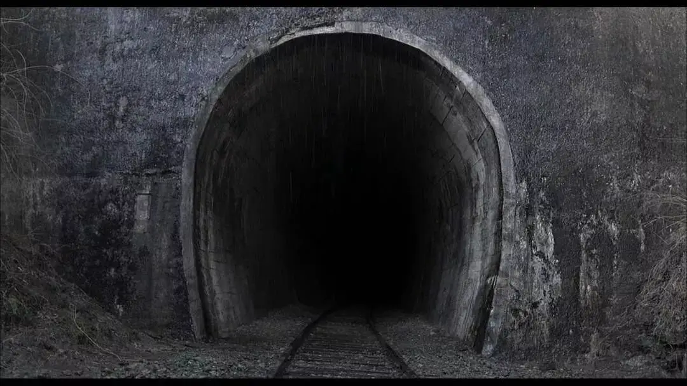
每当看到韩国发生凶杀案，何升均便急着要了解凶手的作案手法，以期找到凶手任何的蛛丝马迹。
为了破案，家人的生日都会忘记，可命案的每一个时点和细节他都记得非常清楚。
何升均之后以在现场调查案件时搜集的资料和自己的搜查日记为基础，写了一本书叫做《华城尚未结束》。
在书中，他按照事发顺序详细记录、分析了案件经过。
河升均说，“推出这本书，是为了将案件的真相公布于世，并抓到犯人。”
就像书名所表达的决心，何升均说，“一定要在公诉时效到期之前抓到犯人。”
过去韩国因为取证难度以及司法成本的考量，对于案件有15年的公诉期，也就是说案件过了十五年，就算凶手被抓到也不会被惩罚。
虽然之后韩国废除了公诉时效期，但新的法律也只是针对以后的新案子。
对于这件发生在上世纪的老案子，依旧有公诉时效期的限制。
华城连环杀人案最后一起发生在1991年，也就是说，对于何升均他必须要在2006年之前破案。
可何升均未能完成这项夙愿，不仅时效期无情到来，他本人也已经年迈面临退休。
退休前一年何升均心情非常复杂，于是发表了《写给杀人犯的一封信》，这封信将何升均过去二十年来的心路历程写了出来，非常震撼：
kaputori（办案时给凶手起的代称），我是这么称呼你的。
不知道你是否喜欢。为了不忘记你的存在，10多年前我给你取的这个名字。
虽然不知道你是一个人还是两个人，或者是更多的人，总之，为了和你，或者和你们相见，我至今花费了不少功夫，你们或许会对此提出反对吧。
kaputori，去年末，华城一名回家途中的女大学生失踪并被杀害的事件。
至今还没有被解决，因此我在这边做搜查指导。
不过，这真是不能脱身的恶缘啊。
这次事件中女大学生失踪被害的场所，就是那个你或者你们曾残酷的践踏人们宝贵生命的城市。
第九回事件的公诉时效在下个月到期，最后的第10回案件则在明年4月到期，我也将在明年6月退休。
这次（21日）是我在职中最后一次迎来警察节了，时效期满再加上案件担当人退休……
或许会推动这一案件再一次成为世间众议的话题吧。
我也很惨，当时想著一定要把手铐戴到你的手上，不过我快要失去这个权力了。
作为刑警，我一直觉得自己是受到恩惠的人。
从1971年当上警察开始，到担任强力课刑警，以那292个杀人犯为代表，我送进牢房的人达数千之多。
以上各点功绩被认同之故，2004年7月开始的一年间我还担任了所长一职。
可是，这又能怎样，始终没有逮捕到你。
第一次和第二次事件发生以来，也就是86年12月作为刑事系长执勤开始，到华城事件搜查本部工作，我刚好工作20年了。
为了调查案件，我几个月不回家，一直在誓死要把你们抓住的念头下疯狂奔走。哪怕把妻儿的生日忘掉，我也能记得住你全部的犯罪时间和手法。
我甚至有一个部下因为过劳倒下，至今半身不遂。还有另一个部下因为对疑犯暴力审问而使疑犯死亡的，我也曾因此被解除职位。
就在这期间，你也像嘲笑我们似的，一次次从容地犯罪，为什么呢？
你一定也已经到了中年了吧，有著极端内向、无法社交的性格，你结婚了吗？有孩子了吗？
那个电影，《杀人回忆》，你也看了吗？
作为一个连犯人都抓不到的警察，我无论如何也不能走进熙熙攘攘的电影院，只能一个人偷偷地在汽车放映场观看。
受害人中连70岁的老婆婆都有，你难道没有想到过自己的母亲吗？还有刚刚结婚的女性、年轻的20岁姑娘、年幼的女初中生、高中生，她们肯定都曾经向你哀求过吧。
我去了你作案的地方，看到尸体的时候，我怒不可遏，发誓抓到你的时候，一定不给你站在法庭上接受审判的机会，我要亲自下手解决你。
可是这又能怎样呢。我始终没能逮捕你，对於晚辈和被害者遗族来说，我也是罪人。
我每天都在梦到 被全裸捆绑着被施以充满变态的暴行的女性受害者们，还梦到像你这般的恶魔们是没有公诉时效的，即使我退任了，我的后辈们也会把你抓住。
得了癌症的话，彻底的治疗是理所当然的。可是对于要从世上除去你这样社会的癌症而言，居然存在公诉时效，你不觉得奇怪吗？
kaputori，你知道吗，我依然住在华城，我打算搜捕你，直至我离任的那一天。
只要哪一天公诉时效被取消的话，即使我不在了，我的后辈们也必定会把你逮捕归案。我们一直都在进步。
请务必不要比我先死。我们必定应该会晤的，对吧，kaputori。
原文：朝鲜日报
翻译：sinvergüenza
这封信写满了何升均对凶手的谴责和对破案的渴望。
2006年，最后一起案件的公诉期已过，按照以往惯例，案件资料会在一年后销毁。
但对于这件案子，警方决定将案件资料永久保留。
即使公诉期已过，警方并没有打算彻底放弃追查，他们渴望着哪一天和真相不期而遇。
-03- 杀人回忆
韩国电影深刻地影响着韩国社会。
对于很多含冤不白的惨剧，都难逃被时间无情遗忘的命运。
但是韩国电影却将华城连环杀人案的记忆永远地刻在了超越时空的光影艺术中。
并将这个本只属于韩国的伤疤扩展到了全世界。
2003年，也就是距离1986年第一起案件发生后的18年，奉俊昊拍摄了留名世界电影史的《杀人回忆》。
电影以何升均为原型进行了刻画，将这件案子里的悲惨、压抑、绝望一分不差地全部表达出来。
一开始，一个警察吊儿郎当根本不把这件案子放在眼里，另一个警察科班出身、思维缜密，面对这件案子似乎胸有成竹。
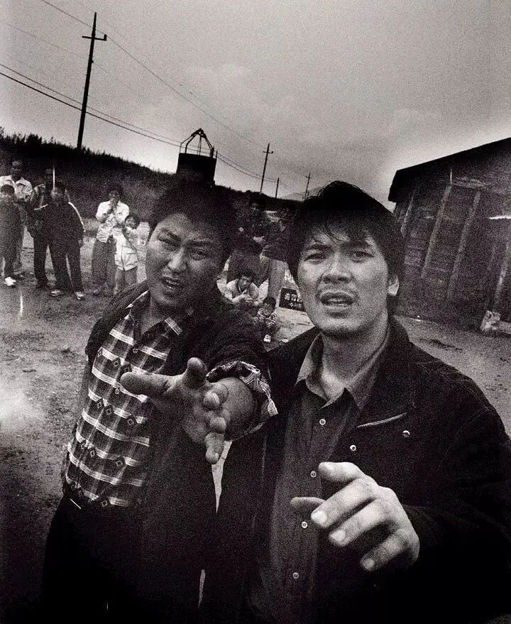
当一件又一件惨剧发生，一个又一个冰冷悲惨的尸体倒在他们面前时，他们变了。
吊儿郎当的警察忽然变得无比认真，胸有成竹的警察在一次又一次的挫败中变得绝望、歇斯底里。
破案逐渐成为了他们的呼吸，案件破不了，这口气便一直积压在胸间，一直呼不出去。
在雨夜，在隧道口，在田埂，在办公室，他们发狂般寻找线索。
当最后发现一心以为的嫌疑人并不是真凶时，他们对天哭喊，那种抓不到、被调戏的心情真的太绝望。
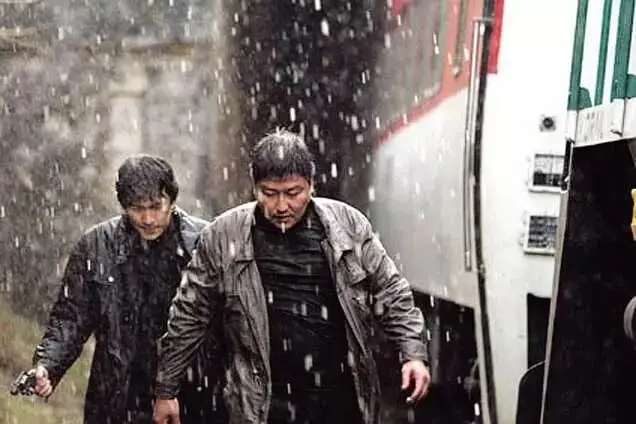
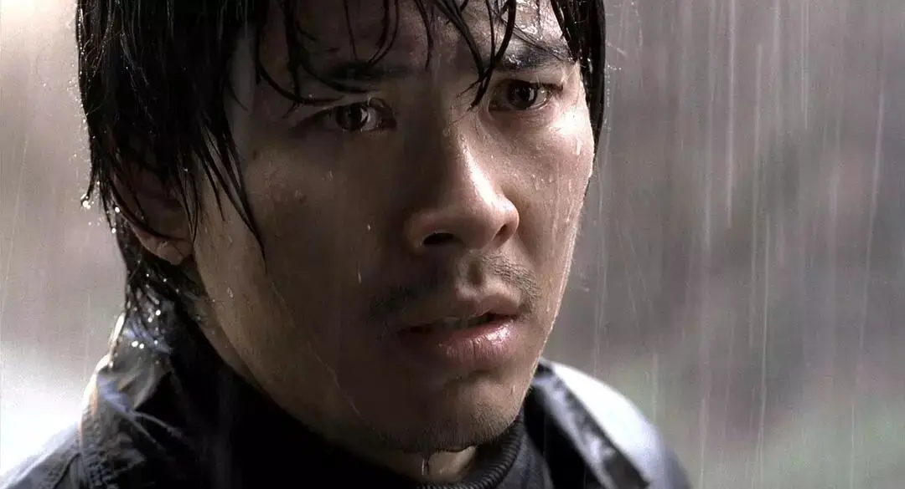
就这样，这部电影将所有观众带回到那恐怖压抑的回忆深渊中。
电影最后，12年后朴探长回到案发现场，眼前是一片静谧美好的金黄色稻田，仿佛这里曾经什么都没有发生过。
一个小女孩告诉朴探长之前有一个人也来过这里，朴探长急着问，他长什么样。
女孩告诉他，很普通！
恶魔就在人间，他们的面孔并非凶神恶煞，他们就在你我的身边，曾和你擦肩而过，也和你一样也许拥有妻子和孩子。
最后，宋康昊饰演的朴探长怀着极其复杂的情绪直视镜头，那几秒钟让人头皮发麻。
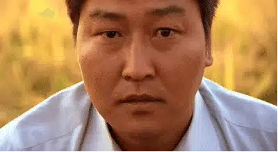
导演奉俊昊曾表示拍摄初衷正是希望能尽早逮捕凶手，在搜集资料时曾无数次想象与凶手本人见面。
所以最后安排了那个镜头，让宋康昊直视镜头，与凶手对视，奉俊昊相信凶手一定会看这部电影。
这个眼神代表着是无数受害者对凶手的谴责！
关于这场惨案的电影改编还有很多，《信号》、《隧道》、《岬童夷》....韩国用电影告诉警方，我们一直在关注，一直在等待真相。
同时，韩国电影提醒所有人不要忘记这场惨案，不要忘记那些含冤未白的可怜人，不要忘记那个至今逍遥法外的恶魔。
而被人关注，被人纪念，正是对受害者家人最大的安慰和支持。
这一点，韩国电影真的很值得我们尊敬。
-04- 伸冤在他
现实总比电影更戏剧。
就像何升均信中所写，坚信他的后辈会完成使命。
果然，警方通过DNA找到现年五十多岁的李姓凶手，原来他早在1994年已经入狱。
当年，他与妻子吵架，妻子离家出走后，他盯上了妻子的妹妹，将其残忍强奸、杀害。
后来他被捕入狱，被判无期徒刑。
也就是，警察日夜寻找的恶魔竟然一直在“看似最危险其实最安全”的监狱中。
而凶手也显然并未看到《杀人回忆》和何升均写给他的信。
已经73岁的何升均得知消息后表示：“案件的公诉时效已经过期，即使抓到真凶也没有办法对他进行惩罚。抓到嫌疑人，心情虽然也好，但也很生气，气到都睡不着觉”。
但不论如何，真相终于大白。
这个消息也将无数影迷心中的石头放下，电影也因为现实的变化而发生变化。
这件事前，看《杀人回忆》是一种感觉，这件事后，看《杀人回忆》又是一种感觉。
迟到三十多年的真相虽然会舒缓我们对这件事的压抑，但又加增了另一种复杂的感觉，里面有更多更微妙的感慨、无奈、苍凉和义怒。
而这些复杂的情绪背后又包含着属于人类的真相。
首先是对公义的渴望，对于这件案子，为什么所有人都渴望破案。
因为如果没有真相、凶手继续相安无事的存在，这就是对人间美好的否定，就是对国家法制、对人性本善的否定和讽刺。
所以必须要破案，必须要以真相大白证明这个世界不是地狱，也才会给生者继续活下去的动力。
除了这一层意义，其实我们还有另一种很难察觉的希望，那就是我们认为破案对于死者意义重大。
可如果你是无神论，其实破不破案对于死者没有任何意义，因为他们不能复活，他们不能亲眼看到凶手被惩罚。
但在这些事面前，没有一个无神论，所有人会不自觉地说出很多宗教性的话语。
比如希望以真相慰藉死者在天之“灵”。
比如大家会禁不住感慨“魔鬼在人间，地狱空荡荡”“天网恢恢”、“苍天饶过谁”、“报应不爽”.......
请注意这背后隐藏的东西，我们在承认人有灵魂，我们在承认上帝和魔鬼，我们在承认超自然的审判。
我们竟然不自觉变成了一个有神论者，这究竟发生了什么？
如果一个人杀了另一个人。
我们每个人尤其是受害者，都恨不得立马将凶手绳之于法，并用最有力道的话语去对凶手进行谴责。
也就是说，当不公发生时，人类手上有三样武器可以维护公义，一个是法律，一个是道德，还有一个就是良心不安。
但现实中，这三件法宝经常迟到，甚至缺席、失效。
比如人类历史中无数战争中丧失的人，他们的仇敌并未得到真正公正的审判，甚至那些刽子手并不会觉得心里不安。
不论人类社会怎么发展，法律始终会有漏洞，道德也总会因为各样立场而失去公正，良心也会因为各样事情变得扭曲甚至会泯灭。
人间渴望公义，但没有真正的公义。
据目前报告，罪犯对华城的罪行一概否认，真相虽然来到，但很苍凉，对于我们，能做的是选择用子弹还是飞脚结束他的生命。
但这一惩罚比起死者经历的哀求和恐惧，比起受害者家属和警察过去三十多年经历的噩梦，根本就不值一提。
更何况，他根本就不认罪。我们只能惩罚他的身体，却不能让他的灵魂产生丝丝不安。
所以，人类需要上帝，“举头三尺有神明”、“伸冤在他，他必报应”，一个超验的、绝对公义的存在会在将来的某一天对人类进行审判。
任何谎言、任何谋杀、任何恶毒，甚至任何一个心思意念都将会被审判。
这份盼望甚至是一种客观存在，它并不需要被教育才会产生，它是一种人类集体无意识，在生死时刻，在不公不义中便自然出现。
而这种公义的实现天生就是滞后的，甚至是没有时限的，因为你不知道上帝的审判什么时候降临。
但我们知道他一定是完全公平的。
正因为这种对于上帝的潜在信心，会让人产生一种敬畏，这份敬畏会弥补法律的漏洞，会让人间的道德和良心发挥最大的力量......
跨越三十多年的华山连环杀人案事件，里面有恶魔，有上帝；有地狱，也有天堂；有绝望，也有希望。
亲历者经历的冤屈也许没有一个人能够真正体会，但上帝知道！
愿逝者安息，愿他的公义如江水滔滔而来。
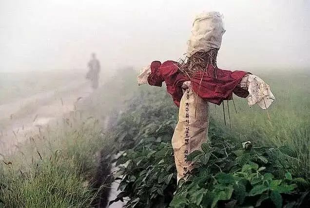
这里没有挑逗你眼目情欲的小鲜肉
也没有挑动你肉体情欲的段子
更没有膨胀你今生骄傲的鸡血
我们只在乎那些最质朴真诚的作品
在那里我们才能恢复真正的想象力
我们也坚信这才是我们真正需要的

ID:Six_hundred_hits
长按二维码，一键关注
【六百击】
电影评论
尽情分享朋友圈

微信二维码打赏通道